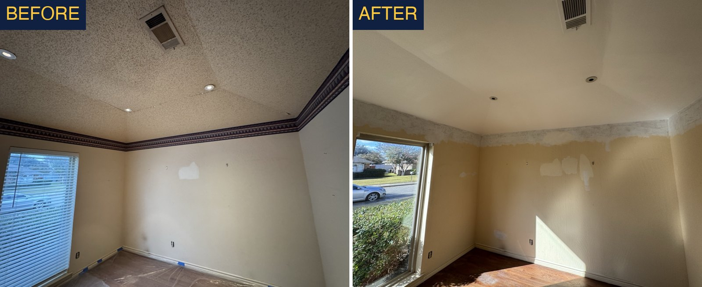

Popcorn Ceiling Removal in DFW: Cost, Process & What to Expect
By Dillon Hubbard, OnPoint Pros · July 1, 2026 · Updated October 1, 2026
Popcorn ceilings instantly date a home, and removing them is one of the highest-impact updates you can make. Here's exactly how the process works in DFW and what to expect.
Popcorn ceiling removal in DFW typically runs $1–$2 per square foot, so a 300 sq ft room starts from around $300 and most rooms are finished in one to two days. The work is scrape, repair, retexture, and repaint. Homes built before 1980 should be tested for asbestos first; after that, the biggest cost driver is the ceiling height and how much drywall repair the scrape exposes.
The Step-by-Step Process
1. Protect the room. Floors, walls, and fixtures get covered, popcorn removal is messy, and containment is half the job.
2. Scrape. The texture is dampened and scraped off down to the bare drywall.
3. Repair and retape. Old popcorn often hides bad tape joints and cracks. We fix those before refinishing.
4. Retexture and prime. We apply your chosen finish, flat/smooth or a light knockdown, then prime so it's paint-ready.
A Note on Older DFW Homes and Asbestos
Popcorn texture installed before the 1980s can contain asbestos. If your home is that era and the ceiling has never been redone, it should be tested before any scraping. We'll flag it and point you to proper testing, never scrape suspect material dry.
Finish Options
Smooth (Level 5) is the modern, high-end look and shows off good lighting, but it's the most labor-intensive because every imperfection shows. Light knockdown is more forgiving, hides minor flaws, and matches the texture on most DFW walls. We'll help you pick based on your ceilings and budget.
What Actually Drives the Price
The scraping itself is the cheap part. Three other things decide what the invoice looks like, and a bid that does not address all three is not really a bid on your ceiling.
Ceiling height. A standard eight foot bedroom ceiling is step ladder work. A two story foyer is not. We have scraped and retextured an eighteen foot foyer ceiling, and at that height every stage takes scaffolding or a lift, the overspray reaches further, and masking the walls below becomes its own job. Height is usually the single biggest swing between two rooms of identical square footage.
What the scrape exposes. Popcorn was popular partly because it hid a multitude of sins. Underneath, we routinely find seams that were never properly taped, nail and screw pops, hairline cracks tracking across the ceiling, and old water stains near bathrooms and roof penetrations. Ceiling and seam repair on a textured ceiling starts from around $950 for a batch of several spots, so a ceiling hiding real damage can cost more to repair than it did to scrape.
Paint. Most quotes include one color. If you want the ceiling a different white than the trim, or you are doing several rooms in different colors, expect roughly $110 per additional color to cover the extra material and cut in time.

Why DFW Ceilings Get Knockdown Texture
Almost every popcorn removal here ends in knockdown rather than a dead flat ceiling, and that is not laziness. Knockdown is the texture already on the walls and ceilings of most North Texas homes, so matching it is what makes the finished room look original instead of patched. It also forgives the small imperfections that are unavoidable on a thirty year old ceiling that has just been stripped.
A truly flat, level five ceiling is possible and it looks fantastic in a modern interior, but it is a different scope and a different price. It requires skim coating the entire surface rather than repairing spots, and because flat ceilings show every ripple under raking light, the tolerance for error drops to near zero. If a flat finish is what you want, say so when you ask for the quote rather than after the texture is up.
The practical thing to ask any contractor is whether they will match your existing texture pattern, and whether they will spray a sample so you can compare before they commit to the whole room. A mismatched ceiling texture is one of those details nobody can name but everybody notices.
Living Through It
Honest expectations, because this is a messy job even done well. The scrape is done wet, which keeps dust down dramatically but means slurry comes off the ceiling onto plastic. Floors and walls get masked, furniture either leaves the room or gets covered and centered, and you should plan on the room being unusable for the duration.
A single room is commonly a one to two day job, but the stages have drying time built in that cannot be rushed. Scrape, repair, texture, prime and paint each need the previous coat cured, which is why a crew that promises a whole upstairs in a single day is either cutting a stage or planning to come back.
- Clear breakables, wall art and anything on top of furniture before the crew arrives.
- Remove ceiling fans and light fixtures, or confirm in the bid who is taking them down and putting them back.
- Plan where pets will be. The plastic, the lift and the open doors are a bad combination.
- Expect to keep that room closed off while coats dry.
Is It Worth Doing?
Popcorn ceilings are one of the few remaining features that date a house instantly, the way wood paneling or brass fixtures do. Buyers read them as deferred maintenance, and a home inspector or buyer agent who sees popcorn in a pre 1980 home will raise the asbestos question whether or not it applies, which turns a cosmetic detail into a negotiating point.
For a room or two it is one of the cheapest changes that reads as a genuine update rather than a touch up. The best time to do it is before new flooring and before repainting the walls, since the ceiling is the dirtiest stage and you do not want to mask fresh floors to get at it. If a wider refresh is on the table, sequencing it correctly saves real money.
Frequently Asked Questions
How much does popcorn ceiling removal cost in DFW?
It's priced per room based on ceiling size and the finish you choose. Smooth costs more than a light knockdown. Send us the room dimensions for a quote.
Do I need to move out during popcorn removal?
No. We work room by room and contain the mess. You'll want to keep the work area clear, but the rest of the house stays livable.
Can you remove popcorn and match the rest of my ceilings?
Yes. If you're only doing some rooms, we match the new texture to your existing ceilings so it reads as one consistent finish.
Why does my new ceiling have texture instead of being smooth?
Knockdown texture is the standard on most North Texas ceilings, so matching it makes the finished room look original rather than patched. A dead flat ceiling is possible, but it means skim coating the whole surface and it shows every ripple under raking light, so it is a separate scope. Ask for it up front, not after the texture is sprayed.
Does a tall foyer ceiling cost more to scrape?
Considerably. We have done popcorn removal on an eighteen foot foyer ceiling, and at that height every stage needs scaffolding or a lift and the masking below becomes its own job. Height is usually the biggest price difference between two rooms with the same square footage.
What if there is damage under the popcorn?
It is common. Untaped seams, nail pops, hairline cracks and old water stains all hid under the texture. Batch ceiling and seam repair on a textured ceiling starts from around $950, so ask any contractor what repairs cost if the scrape exposes them rather than finding out as a change order.
Should I remove popcorn before new floors or after?
Before. The ceiling is the messiest stage of any refresh, and doing it first means you are not masking brand new flooring or freshly painted walls to get at it. Ceilings, then walls, then floors is the order that saves money.
Need Drywall Repair in DFW?
Text a photo for a fast, upfront quote. Fully insured & bonded. Rated 5.0 on Google.
Call (469) 238-1719